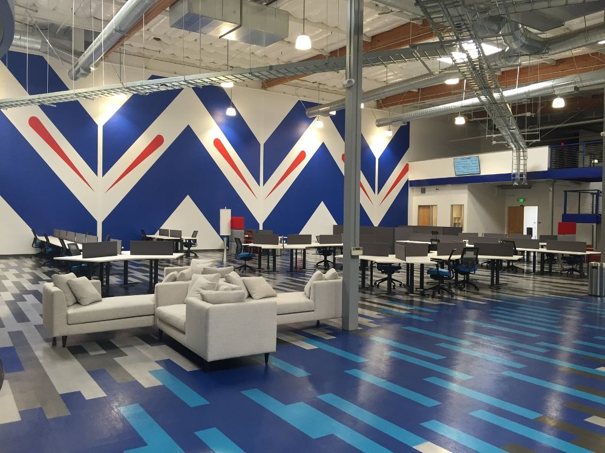

IT Support/special project was the next internship, and this was by far the hardest one out of all them. The company is Intelicare Direct, and they are a customer service solutions company that was a branch to another company. There I helped work with IT and worked on a special project. They had just bought 200 new computers and we had to get rid of 80 of the old computers and configure them all with the new software they employees would be using. The one I was told to learn and teach to the rest of IT was Deep Freeze and it was up to me to know how it worked configure it and set it up, so I started with a couple for testing and began to read lots of information of deep freeze and all it can do. We used the cloud-based version and next came installing it on all the computers. This is the most tedious part because you need to configure the computer and install all the software but the one cool part about the cloud-based version is that all I needed to do is sign into my account and the setting I configured when I was testing would automatically apply to that computer. Once I was done with a section I would test by updating them all and by downloading a pdf and restarting and making sure it went back to its original state. Here I was thrown in the dark and I just had to figure it out, which was scary at first but once I got the ball rolling it was a blast and I felt accomplished and proud of how I contributed to the team.
<
